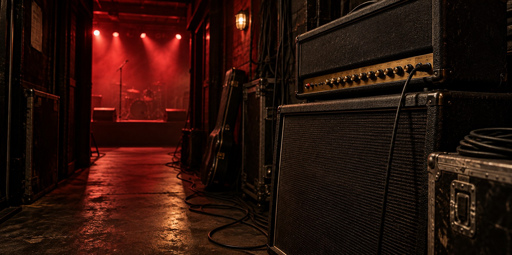
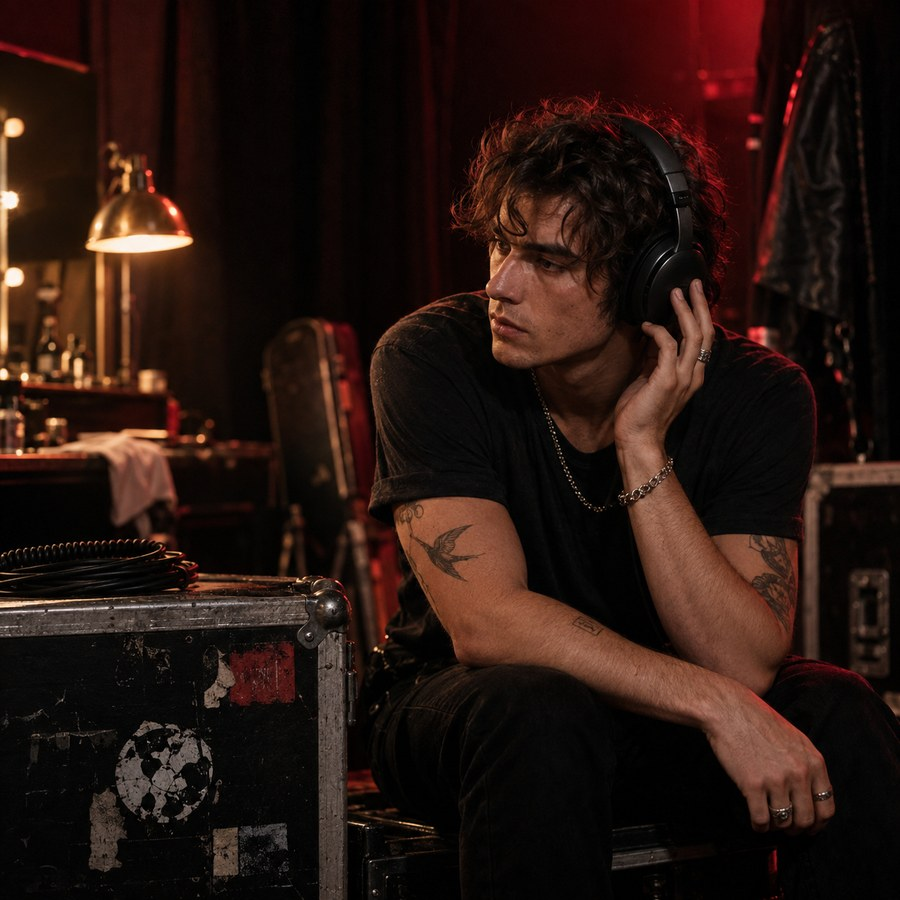
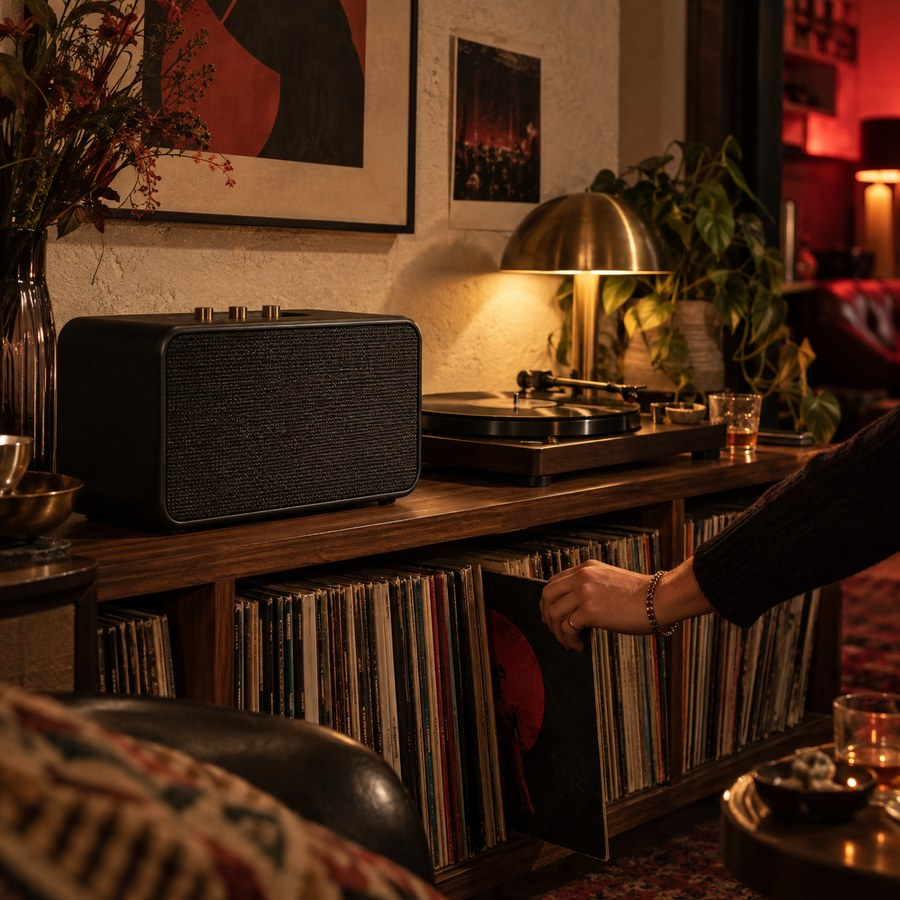
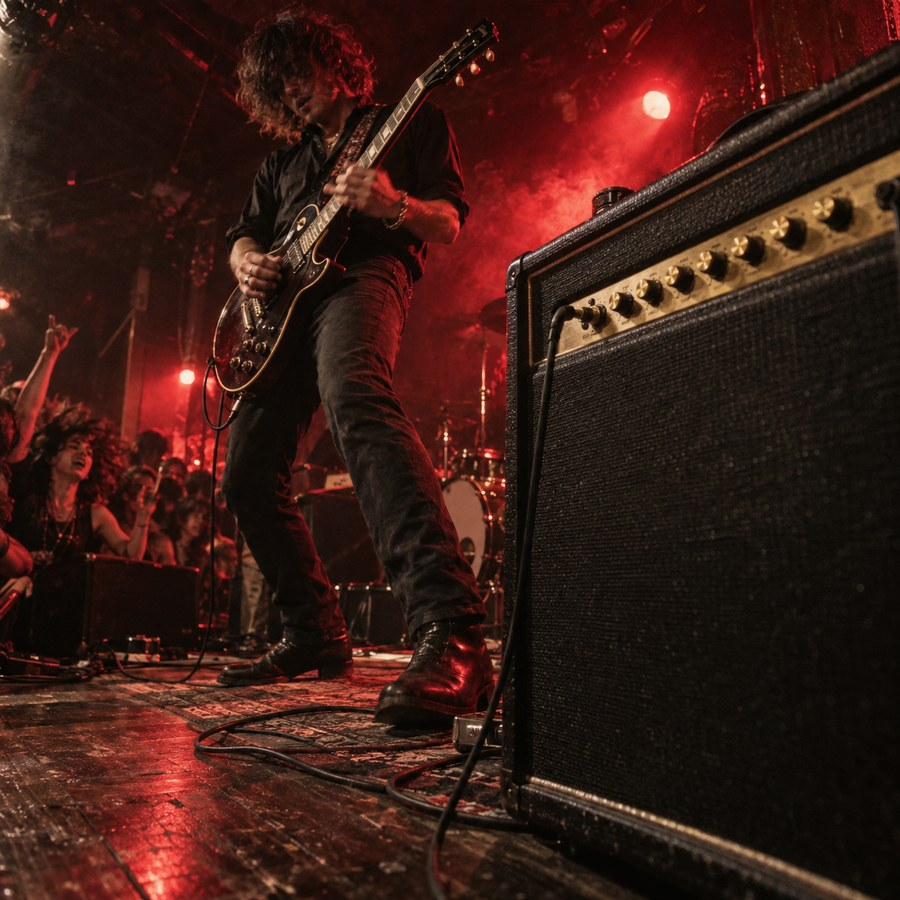

Experience gap
사용자는 제품군을 본 뒤 비교하거나 자신에게 맞는 장비를 고를 수 없었습니다.
Portfolio case study · 2026
강한 원페이지 비주얼을 유지하면서도 사용자가 장비를 발견하고, 비교하고, 상세 맥락까지 탐색할 수 있는 브랜드 경험으로 확장했습니다.
01 Problem
기존 결과물은 반응형 이미지와 강한 분위기를 갖췄지만 17개의 가짜 링크, 제품 상세 흐름 부재, 범용적인 neon UI 때문에 실제 서비스와 포트폴리오 양쪽에서 설득력이 끊겼습니다.
사용자는 제품군을 본 뒤 비교하거나 자신에게 맞는 장비를 고를 수 없었습니다.
cyan grid 중심의 표현이 Marshall의 비닐, 황동 노브, 크림 패널 같은 물성과 충분히 연결되지 않았습니다.
02 Direction
신호가 입력되고, 압력을 얻고, 공기를 움직여, 사람에게 흔적을 남긴다는 하나의 흐름으로 정보 구조와 모션을 통합했습니다.
03 Art direction
회색 배경의 제품 컷과 청록색 스튜디오 이미지를 걷어내고, 백스테이지·리스닝룸·작은 클럽이라는 실제 사용 장면으로 교체했습니다. 모든 이미지는 비닐 블랙, 스테이지 레드, 브라스 조명을 공유합니다.




04 Visual system
효과를 늘리기보다 앰프 패널, 인쇄물, 오래된 장비에서 가져온 제한된 재료를 반복해 브랜드 기억을 강화했습니다.
05 Inclusive by default
메뉴 포커스 트랩, 캐러셀 방향키·Home·End, 명시적인 이전·다음 버튼을 제공합니다.
JavaScript가 없어도 내비게이션, Footer 링크, 가로 스크롤 콘텐츠가 사라지지 않습니다.
모션 감소 설정에서는 등장 효과, 진행선 전환, 부드러운 스크롤을 제거합니다.
유일한 H1, main landmark, carousel·slide 이름, native details 구조를 사용합니다.
06 Result
결과물은 더 이상 한 장짜리 무드보드가 아닙니다. 방문자는 콘셉트를 이해하고, 장비를 추천받고, 비교한 뒤 상세 맥락과 공식 제품군까지 이동할 수 있습니다.